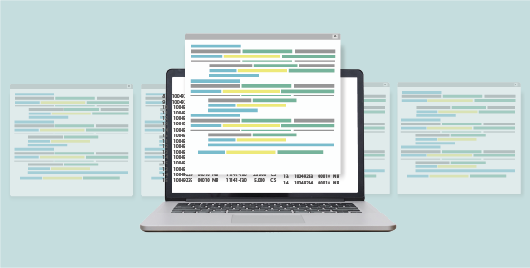
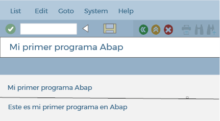

Es una secuencia de instrucciones escritas para realizar una tarea específica en una computadora mediante sentencias de lenguaje ABAP.

- Ingrese a SAP por medio del SAP LOGON.
- Escriba en el campo de comandos la transacción SE38 y presione enter.
- Visualice el editor ABAP y escriba allí el nombre del programa que va a crear. Recuerde que debe empezar con Z, luego presione el botón Create.
ToquePase el cursor por cada apuntador para leer su información.
1
2
- Aparecerá una ventana que le va a pedir:
ToquePase el cursor por cada elemento para conocer su descripción.
Título y tipo en la creación de un programa ABAP
Título
Tipo
- Presione grabar y el sistema, en una nueva ventana, le solicitará que ingrese el paquete o clase de desarrollo. Luego, haga clic en el botón objeto local, que es lo mismo que escribir $TMP y presione grabar de nuevo.
- Escriba el siguiente código en el editor: WRITE: “Este es mi primer programa en ABAP”.
- Luego, presione el botón Activate, el cual compilará y activará el programa.
- Todas las sentencias en ABAP terminan con un punto.
- ABAP no distingue entre minúsculas y mayúsculas.
- Una sentencia ABAP puede ocupar más de una línea.
- Las cadenas de texto se escriben entre comillas simples.
- Una vez compilado y sin errores, ejecútelo con el botón correspondiente o presione la tecla F8.
- La pantalla de salida que visualizará será la siguiente:

Existen dos tipos de programas: los ejecutables y los no ejecutables.
ToquePase el cursor por cada elemento para conocer su descripción.
Tipos de programas ABAP
Programas